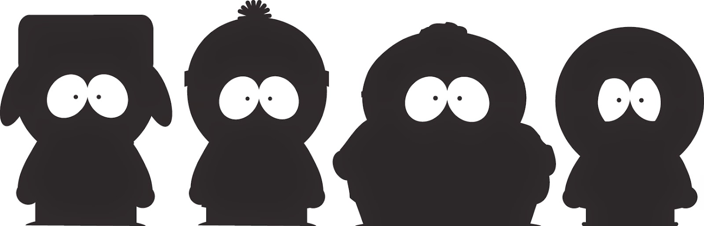
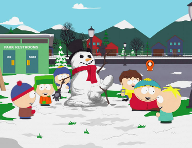
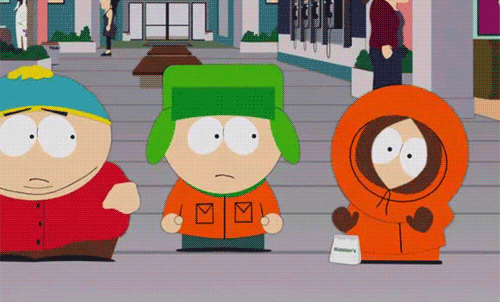

UN APAGÓN DEJA SIN FINAL UN CAPÍTULO DE SOUTH PARK

Fuente: 20minutos
Por primera vez en 17 años, un episodio de South Park se quedó sin desenlace. Los creadores Matt Stone y Trey Parker no pudieron emitir el final del capítulo debido a un inoportuno apagón en los estudios de Comedy Central, que se encuentran en Estados Unidos.
Las tropelías de los desvergonzados pequeños de South Park llevan en la pequeña pantalla desde 1997. En total, 240 episodios con su principio, nudo y desenlace... hasta hoy. Y es que la famosa comedia de animación plagada de humor gamberro dejó la noche del pasado martes a todos sus espectadores en ascuas, tras no poder emitir el final de un capítulo. Así, "debido a un fallo en los sistemas de edición y sonido, todos los ordenadores se quedaron fuera de servicio durante horas", y el estudio quedó completamente a oscuras, tal y como hemos podido ver en las fotos hechas en el momento por los propios creadores.
Lo cierto es que durante todos estos años los creadores de South Park ha funcionado con un calendario muy apretado. Ya que en lugar de que los episodios se creen con meses de antelación, cada uno está escrito, animado y grabado desde cero tan solo unos días antes de ser emitido.
Por esta razón Trey Parker no dudo en asegurar que, pese a que "es un asco", perderse una fecha de emisión, "después de tantos años tentando al destino mediante la entrega de la serie a última hora, esto tendría que suceder tarde o temprano".
Y es que el proceso creativo de South Park es de sobra conocido y su gran baza es elegir los temas de sus tramas y chistes en el último minuto. En 2003, ya emitió un capítulo de la captura de Sadam Hussein, tan solo tres días después de que hubiera sucedido en la vida real. Y en 2008, menos de 24 horas después de ganar las elecciones presidenciales de EEUU, una versión de Barack Obama apareció en un capítulo, con un diálogo extraído de su discurso de victoria real. Los creadores de South Park anunciaron, a través de Twitter, que a modo de compensación ofrecerán una reposición del capítulo, cuyo final no pudo ser emitido.
EL ESPECIAL DE NAVIDAD DE ‘SOUTH PARK’ NO DEJA TÍTERE CON CABEZA

Uno imagina que la Navidad es tiempo de paz, concordia y buenos sentimientos. No lo entienden así Trey Parker y Matt Stone, creadores de ‘South Park’, aunque esto es algo que los seguidores de la serie ya sabíamos. Célebre es el especial musical navideño de la tercera temporada en el que Eric Cartman entonaba un épico y blasfemo villancico dándole gracias a Dios por nacer, pues gracias a ello en Navidad recibe muchos regalos. En el mismo episodio, el mismísimo Hitler interpretaba un villancico.
El cierre de la decimoctava temporada de ‘South Park’, un especial de navidad dividido en dos episodios, no ha vuelto a dejar indiferente a nadie y ha repartido palos para casi todo el mundo. A lo largo de toda la temporada ya habíamos descubierto que la cantante Lorde era en realidad el padre de Stan, un cincuentón con bigote que, travestido, con peluca y alterando su voz con un programa de edición de audio, había logrado encandilar a las quinceañeras de todo el planeta. En episodios previos al especial navideño, harto de la presión, el Sr. Marsh había renunciado a seguir actuando como Lorde, lo que conducía a la multinacional del entretenimiento que la tiene contratada (en una solución que recuerda a ‘El Congreso’, de Ari Folman) a crear réplicas holográficas de ella y, ya de paso, de los artistas muertos más influyentes de la música moderna.
Es a partir de esa idea que Parker y Stone hacen desfilar por la pantalla en este capítulo navideño a los espíritus holográficos de Michael Jackson(un tímido espectro que no deja de repetir que “ignora” todo lo que le preguntan, en un ácido guiño a su actitud durante los juicios por sus supuestos abusos a menores), Tupac (que acaba acostándose con la madre de Stan), Elvis Presley (que participa en un dúo musical con Iggy Azalea en el que el rey del rock canta y la artista pop se tira pedos) o Kurt Cobain. En una escena censurada en USA, el líder de Nirvana canta un villancico mientras carga un rifle (recordemos que se suicidó pegándose un tiro con una arma de fuego). Al acabar aprieta el gatillo y del cañón sale un cartelito en el que puede leerse “Felices fiestas”.
Pero sin duda el más damnificado es Bill Cosby. Vetado en todas las televisiones estadounidenses por los supuestos abusos sexuales que cometió hace años y que ahora están saliendo a la luz, el cómico afroamericano aparece en el especial de navidad de South Park y es, junto a Lorde, el único artista vivo que es clonado por los antagónicos magnates de la industria del entretenimiento. En un número musical delirante, asedia a su partenaire (Taylor Swift) para que no se marche de su lado mientras la invita a tomar una copa de vino de dudoso contenido.
Acidez extrema en un show que ha sabido mantener el listón muy alto a lo largo de sus recién finalizadas 18 temporadas, y que incluso ha ganado en mordacidad con el paso del tiempo. Otra cosa es debatir si este es el espíritu que uno espera encontrar en un especial de navidad.
RENUEVAN LA SERIE DE ANIMACIÓN 'SOUTH PARK' HASTA 2016
Fuente: 20minutos
South Park, la serie de animación más longeva de la televisión por cable en Estados Unidos, ha sido renovada por el canal Comedy Central hasta el año 2016, informó la cadena en un comunicado.
El formato creado por Trey Parker y Matt Stone alcanzará para entonces su vigésima temporada. La extensión del contrato garantiza que Parker y Stone mantendrán un control absoluto sobre el producto, del que escriben, dirigen y editan cada capítulo.
Comedy Central ha sido nuestro hogar durante los últimos 15 años y nos encanta trabajar allí "La genialidad de Matt y Trey no conoce límites", dijo la presidenta de Comedy Central, Michele Ganeless. "Semana tras semana y temporada tras temporada continúan sorprendiendo y deleitando a los seguidores de la serie, y eso nos incluye a todos nosotros aquí en Comedy Central", añadió.
Las aventuras de Stan, Kyle, Kenny, Cartman y el resto de los irreverentes personajes de South Park llevan en antena desde 1997. "Comedy Central ha sido nuestro hogar durante los últimos 15 años y nos encanta trabajar allí", señalaron los autores, quienes aseguraron que "la serie es una pasada y estamos deseando seguir creando más capítulos".
Parker y Stone también han explotado su creatividad con el musical The Book of Mormon, que narra en clave de humor la historia de dos jóvenes mormones que se marchan de misioneros a Uganda, que fue la gran triunfadora de la última edición de los premios Tony, celebrada en junio. Parker se hizo con el premio a la mejor dirección y compartió con Stone los galardones a la partitura más original y al libreto musical.
